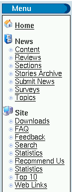

8.2. Add-on blocks
In this section we present some interesting add-on blocks for PHP-Nuke:
Moon & Sun (Section 8.2.1),
Meteosat (Section 8.2.2),
Comic (Section 8.2.3),
Menu Builder (Section 8.2.4),
Treemenu (PHP) (Section 8.2.5),
Treemenu (JS) (Section 8.2.6),
AdSense (Section 8.2.7),
Random Quotes (Section 8.2.8).
8.2.1. Moon & Sun block
The Moon and Sun blocks are very simple blocks: they show the current Moon or Sun image, but technically they contain no dynamic components. The blocks incorporate an image with a fixed URL. It is left to the provider of the image (the U.S. Naval Observatory and the NASA Goddard Space Flight Center) to put whatever image is “current” into the that fixed URL. This simplifies the programming of the blocks substancially.
The Moon block shows the daily Lunar Phase. It also shows the Julian Date, and some Moon info and uses a simple cache to wait x minutes before grabbing the image again remotely. Stores image in temp cache folder on your site.
The Sun block grabs an image of the sun that is taken daily, and places it on your web page. Nice colored Solar Image, includes Sunrise and Sunset info, that can be customized. Also caches image on your site, and fetches the new image every x minutes.
The Moon & Sun block combines the two images in a single PHP-Nuke block, but omits the information and the caching functionality.
 | Caching |
|---|---|
Even if your PHP-Nuke block does not come with a caching mechanism (which is especially useful in cases where the block's content does not change on literally every page request), this does not mean you are excluded from reaping its benefits! In Chapter 24 we discuss all the caching options you have in detail. You may want to use one of the standard solutions presented there, rather than implement a slightly different caching mechanism with each and every block you install on your site. |
8.2.2. Meteosat block
The Meteosat block will display the most recent Meteosat images of the World and Europe. It is a good example of a block that contains dynamic images whose filenames vary according to some date schema (see source code of the Meteosat PHP-Nuke block[1]):
The images are taken from
and are named YYYYMMDDHHMM.jpg, in GMT, so the script has to compute the year, month, day, hour and minutes in GMT, then round down the minutes to either 00 or 30. Thus, although the date and time variables ($year, $month, $day) are dynamic, the schema itself is fixed: the filename is always of the form $year$month$day$hour$minutes.jpg.
Due to delays, the script doesn't try to get the exact latest image, it rather subtracts a safety intervall of 3600 sec from the current time, before it starts the calculations. This way it makes sure an image will always be there.
8.2.3. Comic block
This UserFriendly block will display the daily comic from the well-known User Friendly site. It reads the User Friendly daily cartoon page line by line, searches for the pattern
whatever<IMG ALT="Latest Strip"whateverSRC="imagefile">whatever, |
extracts the location of the image file (imagefile) from it and displays it in the block. The PHP code of the User Friendly block is a classic example of how you can do this “scrapping” in PHP (-Nuke) and is discussed in Section 20.8.
 | You must respect copyright law! |
|---|---|
Some people argue that, by using PHP to find out the right image filename and then send HTML code that instructs the client's browser to request that image from the original site and display it, you don't copy anything yourself, only the client's browser copies the file in the client's video memory, which would be necessary anyway. Thus, the argument goes, no copyright is infringed, since no copies are made by you. However, even if you don't copy the daily comic directly, you use the original author's work to produce a page that can be seen as a “derivative work”. Even if you argue that what you do is just the same as what any proxy would do, if it where instructed to strip all other content (like advertisements, for example) from the requested page and serve only the image, it is not sure that the court will follow you in this interpretation. To avoid even the remote possibility of breaking copyright law, you are well advised to ask the authors' permission, before you use any comics blocks on your site. Some may not agree, in which case you should respect their wish, but some may do give you permission, perhaps under some easy to accept conditions. For example, to obtain permission to show the UserFriendly cartoon on his site, Chris wrote the author, Illiad, who kindly agreed under the condition to reproduce the ads that come with it on the original UserFriendly page. This way, everybody's happy!
|
 | Leges sine moribus vanae[2] |
|---|---|
Actually, we shouldn't have to resort to legal arguments for this - moral alone should suffice to convince you. Please take a moment to think about it. |
See Section 8.3.1 for a module which displays more than one daily comics.
8.2.4. Menu Builder
The Language Menu Builder generates a block with a menu on-the-fly from the administration panel. You can write the menu in your own language, choose your own images for the menu items and have certain options hidden for 'visitors'. The Menu Builder does not use or change any database items. Thus it wil not become obsolete when tables change in the database (this is true for the Treemenu Section 8.2.5 too). See it in action at http://www.sengers-au.com, where you will find other interesting downloads around blocks and modules too.
8.2.5. Treemenu with PHP

The Treemenu for PHP-Nuke will read a simple, plain text file that contains the “nodes” and “leaves” of a menu and will create a block with a Treemenu, as shown in Figure 8-4. Features include:
No database changes. You only change a text file.
Grouping of menu items (“leaves” of the Treemenu) under “nodes”.
Expansion and collapse of the nodes based on the value of an URL parameter. You can thus let a submenu stay “open” , even after you cliked on a leaf link.
Custom images for nodes (open or closed) and leaves. You can make it look like a window of a file manager.
More complicated logic possible (e.g. depending on categories etc.), see Treemenu block for PHPNuke: Refinements.
This Treemenu is based on a PHP class and therefore does not require any client scripting (like Javascript). Thus it will still work on clients with Javascript disabled. On the other side, for every change of the menu, like expansion or collapse , a new HTTP page request is made to the server. Like PHP itself, the Treemenu is a server-side technology.
A detailed description of the Treemenu can be found in Treemenu block for PHPNuke. We also discuss it in Section 17.2.2, in the context of modifying blocks, specifically the Modules block.
8.2.6. Treemenu with Javascript
If you are looking for a Treemenu based on Javascript, you can see one in action at Nuke Turk and download from the PHP-Nuke downloads section there. Since Javascript is a client-based technology, the menu will be downloaded in whole once and no further page requests will be necessary to display its nodes and leaves. This may result in slower downloads for the first time, but faster response times from the menu in expansions and collapses. But it will not work for clients with Javascript disabled.
An alternative Menu Block is “Sommaire Paramétrable” [3](see also Neue Bloecke). You can download it from Customize Menu. This add-on allows the admin to set up his own menu for Nuke web sites (replaces the Modules block that lists all the active & visible modules).
Figure 8-6. Modules block. created with Sommaire Paramétrable.

Modules block. created with Sommaire Paramétrable.
Features of version 2.0 :
Modules are grouped into categories (sub-menu).
You can choose the display order of each module and category.
You can set up a background color for each category.
You can now add external links in your menu ! (You were restricted to modules only in v.1.0).
Multilingual support.
Categories' names can be centered.
You can display a FLASH file instead of the category's name.
You can set images for each module/link.
You can separate categories with horizontal bars.
You can hide to visitors the modules for members only.
You can choose the class (stylesheet css) for the categories' names.
A 'new mail' icon appears before "Private Messages" if the member has unread Private Messages.
The administration console has been improved and is now completely part of the nuke administration panel. (2 languages included : French and English)
However, it seems that it does not allow subcategories (FIXME: Is this correct?). The name of the file to download is sommaire_parametrable_v2.zip.
8.2.7. Google AdSense block
If you would like to add Google AdSense ads to your PHP-Nuke based portal with ease and customization, then this block is for you! Features of v.1.0:
Choice of showing 1 to 4 ads (no huge skyscrapers unless you want them!)
Full color customizations
To see it in action and to download (registration not required), visit the Downloads section of VieDesigns. If you want to do it yourself, or just acquire the knowhow behind advertisements in PHP-Nuke, read Section 21.11.
8.2.8. Random Quotes block
The Random Quotes block is an unintrusive block for PHP-Nuke 6.0 that takes its quotes from a "fortune" file of your choice ("fortune" is a humourous quotes program commonly available on most UNIX/Linux/BSD distributions). It snaps easily in place and does not break your layout.
It is easy to construct a fortune file with the content of your choice, then let block-Random_Quotes display it. The file type is just like the one for 'fortunes': enter quotes in plain text, separated by a per cent sign (%), see the fortunes file that comes with the block. There also various ready-to-use fortune files available on the Net.
There is no restriction on the file's content, so it does not have to be humourous - it could just as well be religious, political, philosophical, or just plain marketese. You could for example use it to display random Encyclopedia terms, see Random Encyclopedia.